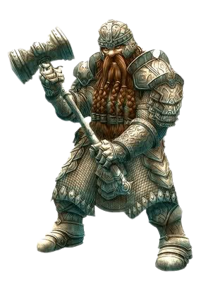
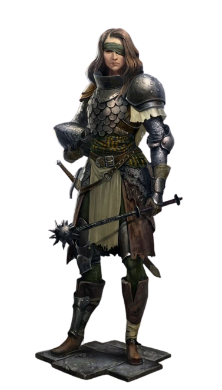
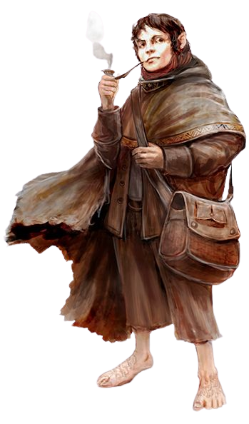
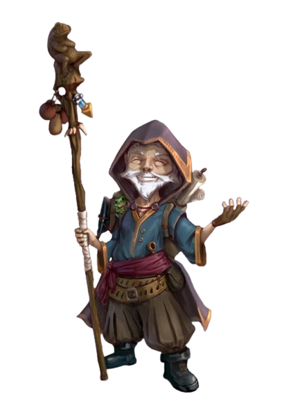
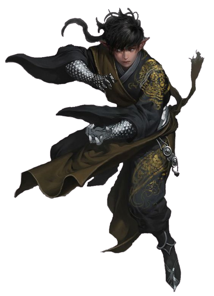
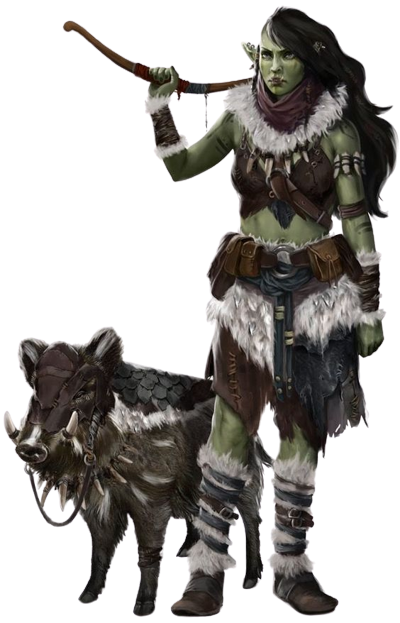
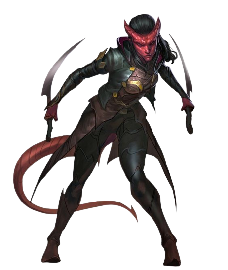

As raças básicas de D&D são Anão, Elfo, Humano, Halfling, Draconato, Gnomo, Meio-Elfo, Meio-Orc e Tiferino. Depois, as subraças trarão novos traços, finalizando assim em termos de benefícios estatísticos (que vão na ficha de jogo) a construção de seu personagem.
Anões são uma raça tradicional de D&D, estando presentes há muito tempo no jogo. Os anões, chamados de o Povo Robusto, são um povo que surgiu e se criou dentro de seus salões esculpidos dentro das montanhas e nas cavernas abaixo do mundo. Usando ferramentas com as quais tem muita familiaridade, construíram suas casas longe do sol, perto do calor das forjas. Por isso se tornaram grandes ferreiros, metalúrgicos, escultores e arquitetos. São de comportamento rígido e estoico como a pedra.
Anões costumam ter menos de um metro e meio de altura, mas possuem ombros largos e músculos fortes, muitas vezes pesando o mesmo que um humano muito mais alto do que ele. A cor da pele varia do marrom da terra a palidez do mármore, incluindo também tons metálicos como o cobre, o dourado ou o prateado. Já seus cabelos costumam ser negros, cinzentos, castanhos ou ruivos. A barba é culturalmente algo valorizado, sendo raro um anão do gênero masculino ser visto sem ela.
Os elfos são outra raça tradicional de D&D, surgida já nas primeiras versões do jogo. O Povo Belo, como também são conhecidos, são um povo com ligação com as antigas florestas e bosques, com o plano de Faéria, com construções precisas de cidades no topo das árvores ou torres e palácios feitos do mais puro material, refletindo a luz a quilômetros de distância. Suas duas principais paixões são a natureza e a magia, seguidos da arte e, por fim, dos demais prazeres do mundo. Os elfos têm traços finos, graça sobrenatural e uma beleza feérica, com olhos humanos e orelhas compridas.
São em média um pouco mais magros e baixos que os humanos, medindo entre 1,50 e 1,80 metros e pesando entre 50 e 70 quilos. Não há diferença perceptível na altura entre elfos e elfas. Os tons de pele dos elfos tem a mesma variedade que a dos humanos, com algumas variedades mais exóticas como a cor acobreada, bronzeada, prateada ou branco-azulada. Os cabelos já vão do branco e prata ao ouro e preto, incluindo variedades como o verde ou o lilás. Os olhos também variam bastante, sendo comuns cores como o verde, azul, preto, dourado e prata. Elfos gostam de roupas elegantes, muitas vezes de tecido leve, e de joias discretas mas perfeitamente lapidadas.s
Na imensa maioria dos mundos de D&D, humanos são a raça mais comum e que mais se espalhou pelo mundo, sendo encontrado na maioria dos lugares, de Norte a Sul. Humanos são uma ancestralidade muito bem adaptada, com composição cultural, social e étnica intensa, dos povos mais cosmopolitas aos de vida mais selvagem. Nenhuma outra raça vive em tantos ambientes diferentes, desde desertos quase inférteis a pradarias verdejantes, florestas densas e montanhas inacessíveis. Nada parece impedir os humanos de expandir seus territórios e algumas raças veem esse comportamento como o de uma espécie de praga em algumas situações.
Humanos de forma individual ou coletiva variam dos que prezam sentimentos nobres e altruístas a egoístas sem coração. Assim, comunidades humanas nunca são iguais, o que causa desconfiança de muitas criaturas dos mundos fantásticos de D&D.
Humanos também tem um sentimento de comunidade dúbio e guerras entre sociedades humanas são absolutamente comuns, acontecendo a todo momento. Provavelmente esta característica é a que impede que eles dominem absolutamente todos os mundos de forma indiscutível.
Os Halfling, são seres corajosos e ágeis. Tão corajosos que isso muitas vezes ultrapassa o que seria sensato, fazendo de sua agilidade e ligeireza habilidades essenciais para se livrarem de encrenca. Quando tudo isso falta, é fato que muitas vezes acabam escapando por pura sorte mesmo, que parece estar ao lado deles mais do que do lado de outros seres vivos.
Os Halfling são divididos principalmente em três linhagens: Pés-Ligeiros, Austeros e Fantasmassábios.
Draconatos são dragões humanoides, basicamente, bastante altos, medindo a partir de 1,90 com alguns indivíduos passando dos dois metros de altura, e pesando entre 100 e 150 quilos. Seus pés tem três garras na frente e uma atrás, enquanto suas mãos possuem quatro garras, sendo uma delas opositora, como os dedos da mão humana sem o mindinho. A cabeça é reptiliana, contendo um focinho rombudo, uma sobrancelha protuberante e babados reptilianos nas bochechas e orelhas. Na parte de trás da cabeça, uma crista de escamas parecidas com chifres forma o que parece uma confusão de cabelos crespos. Os olhos dos draconatos são geralmente vermelhos ou dourados. Seu corpo é preenchido de escamas, algumas vezes da cor de um dragão cromático ou metálico que corresponde ao sopro de dragão que ele possui e a resistência ao mesmo elemento, mas tantas outras não, por causa do constante cruzamento entre as diversas linhagens de dragão, fazendo com que cores que sequer existem nos dragões mais comuns sejam possíveis, ainda que na maioria das vezes esses cruzamentos tenham apenas gerado tons de marrom, ocre, ferrugem ou mais raramente um vermelho escarlate ou um dourado brilhante.
Gnomos são pequenos, medindo entre 90 cm e 1,20m de altura e pesando entre 18 e 20 quilos num geral. Em regiões onde apenas os gnomos da floresta são vistos, eles são tidos como menores que os pequeninos, pois estes gnomos raramente chegam a 85 centímetros (alguns medem menos do que 65 centímetros) e pesam entre 9 e 15 quilos. Algumas vezes eles são tratados como “mini-elfos” por suas orelhas cumpridas, o que ofende os gnomos e os elfos. Outras como “mini anões” por suas barbas, mais uma vez ofendendo duas raças com uma comparação só. A cor de sua pele varia do vermelho a tons de cinza, dependendo muito também de sua linhagem ou etnia. Uma grande parte dos gnomos possui cabelos castanhos, mas cores mais incomuns ou até exóticas também são conhecidas como azul, branco, laranja, verde... A cor dos olhos então podem ser praticamente qualquer uma, e indivíduos que moram em Agréstia das Fadas costumam ter olhos cintilantes, com cores normalmente azuladas ou pretas. Suas roupas costumam ter tons terrosos, muitas vezes com tecido de couro, e por vezes em tons que se mesclem mais a rocha ou às plantas do local, em especial nas pequenas aldeias.
Entre as ancestralidades advindas de miscigenação, nenhuma é tão comum e conhecida quanto os meio-elfos. Eles podem ser encontrados em toda parte, nas cidades, campos, florestas, montanhas, ilhas, e até mesmo em Umbreterna, nas metrópoles planares e no Mar Astral. Esses herdeiros de duas raças se sentem em casa nas grandes cidades humanas ou nos refúgios élficos, mas eles sabem que, no fundo, não pertencem a nenhum dos dois mundos. Ao contrário do que se pensa, no entanto, há sim diferença entre eles, e semelhanças que permitem agrupá-los em 3 linhagens diferentes: os meio-drow, os meio-elfos e os meio-aquáticos (ou meio-elfos aquáticos). Os meio-elfos sem um nome especial que os distinga são filhos entre humanos e elfos lunares, solares, selvagens, estelares e quaisquer subraças de elfos que não drow ou elfos-d’água. Mas aposto que o que você está pensando é a questão universal na cabeça dos curiosos, sejam da Cidade Livre do Gavião Cinzento, de Águas Profundas ou de Sigil: Quando dois meio-elfos tem um filho, o que ele é?
Meio-Orcs são comuns nas ditas “fronteiras selvagens”, onde a terra dos homens e dos orcs possuem limites instáveis, ora questionados em guerra, ora sob a bandeira da trégua. Às vezes essa trégua se torna um tratado de paz, que culmina com casamentos entre membros das duas raças. Eles também são comuns em terras onde ambas as culturas vivem juntas. Por vezes os meio-orcs nascidos distantes dos grandes centros viajam para estes lugares em busca de uma conexão com a cultura de um dos pais, em outras fazem exatamente o contrário. Vivem um dilema parecido com o dos meio-elfos, mas enquanto os meio-elfos costumam ser bem aceitos ou no mínimo são “passáveis”, os meio orcs vivem em um clima de desconfiança e preconceito em muitos locais (se assim for o seu mundo, claro). Onde quer que estejam, no entanto, eles levam consigo a tenacidade, a coragem, as habilidades lendárias de combate e tudo que desenvolveram ou receberam em seu sangue miscigenado e potente.
Distorcidos, inconstantes, desonestos, malditos, indignos e bastardos são apenas alguns termos carinhosos usados para se referir a um tiferino. A verdade é que se há uma ancestralidade com má fama por todos os planos, provavelmente são os tiferinos. “Ninguém confia num tiferino” diria um habitante de Sigil. Nos mundos primários, a evidente descendência de demônios ou seja lá o que for faz da imagem dos tiferinos algo como “um erro que não deveria ter sido criado”. Obviamente nada é tão simples.
Apesar desta má fama, tiferinos não diferenciam dos humanos em termos de bondade, confiança, generosidade, coragem ou qualquer outra qualidade. Claro, para mostrar isso, muitos são obrigados a lutar contra a opinião popular nada saudável que existe normalmente sobre si próprios.